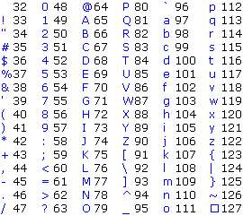

Hilfe
GetKey


Aufruf
Parameter
Rückgabewert
Beschreibung
Beispiel
Siehe auch
code = GetKey()
Parameter
-
Rückgabewert
Es wird ein ASCII-Code der gedrückten Taste zurückgeliefert. Wenn keine Taste gedrückt wurde, dann liefert GetKey nur eine Null zurück.
Beschreibung
Diese Funktion liefert den ASCII-Code einer gedrückten Taste. Wenn keine Taste gedrückt wurde, dann wird nur eine Null zurückgeliefert. GetKey funktioniert nicht mit allen Tasten. So werden Alttasten, Shifttasten sowie Strgtasten nicht berücksichtigt - für diese Tasten muss man KeyDown /KeyHit verwenden.
/KeyHit verwenden.
Der Befehl GetKey ermittelt nur die tatsächliche Tastaturbetätigungen. Wird eine Taste ständig gedrückt, so liefert diese Funktion nur einmal den Wert zurück.
Beachte, dass ein ASCII-Code nicht der Tastatur-Scancode ist. Das sind zwei verschiedene Sachen. Hier eine Liste mit den Codes:

Beispiel
Hier wird demonstriert, wie mit GetKey() gearbeitet werden kann:
Graphics 300, 300, 32, 2
SetBuffer BackBuffer()
Repeat
localChar = GetKey()
If localChar > 0 Then
currentText$ = Chr$(localChar)
ascii = localChar
EndIf
Text 0, 0, "ASCII Code: " + ascii
Text 0, 10, "Eingegebener Buchstabe: " + currentText$
Flip
Cls
Until KeyDown(1)
End
SetBuffer BackBuffer()
Repeat
localChar = GetKey()
If localChar > 0 Then
currentText$ = Chr$(localChar)
ascii = localChar
EndIf
Text 0, 0, "ASCII Code: " + ascii
Text 0, 10, "Eingegebener Buchstabe: " + currentText$
Flip
Cls
Until KeyDown(1)
End
Siehe auch